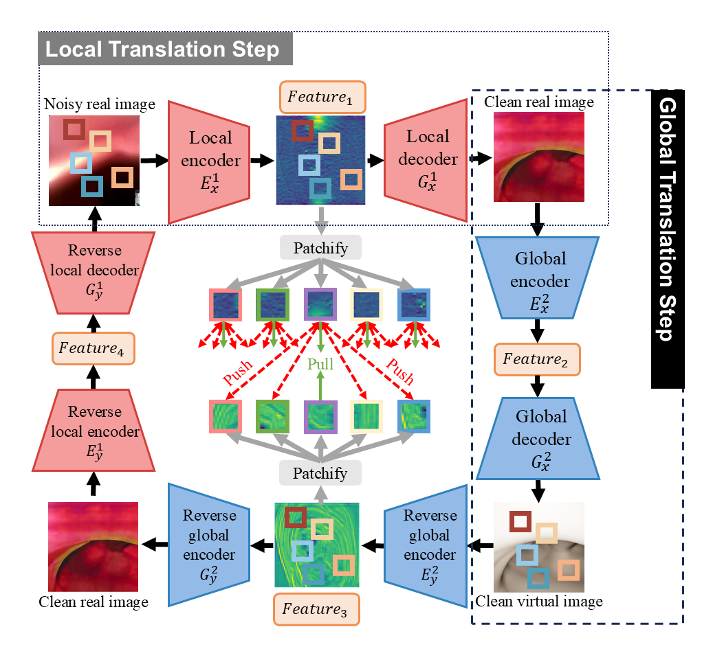

Domain adaptation, which bridges the distributions across different modalities, plays a crucial role in multimodal medical image analysis. In endoscopic imaging, combining pre-operative data with intra-operative imaging is important for surgical planning and navigation. However, existing domain adaptation methods are hampered by distribution shift caused by in vivo artifacts, necessitating robust techniques for aligning noisy patient endoscopic videos with clean virtual images reconstructed from pre-operative tomographic data for pose estimation during surgical guidance. This paper presents an Artifact-Resilient image Translation method (ARTNet) for this purpose. The method incorporates a novel ``local-global'' translation framework and a noise-resilient feature extraction strategy. For the former, it decouples the image translation process into a local step for feature denoising, and a global step for global style transfer. For feature extraction, a new contrastive learning strategy is proposed, which can extract noise-resilient features for establishing robust correspondence across domains. Detailed validation on both public and in-house clinical datasets has been conducted, demonstrating improved performance compared to the current state-of-the-art.
The main workflow and rationale of the proposed method highlight two primary components: a “local-global” translation framework and a noise-resilient feature extraction strategy. For the former, it decouples the image translation process into a local step for feature denoising, and a global step for global style transfer. For feature extraction, a new contrastive learning strategy is proposed, which can extract noise-resilient features for establishing robust correspondence across domains
